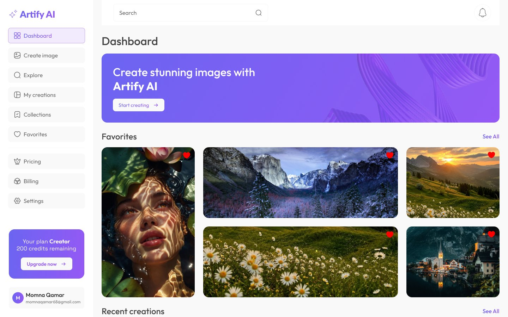
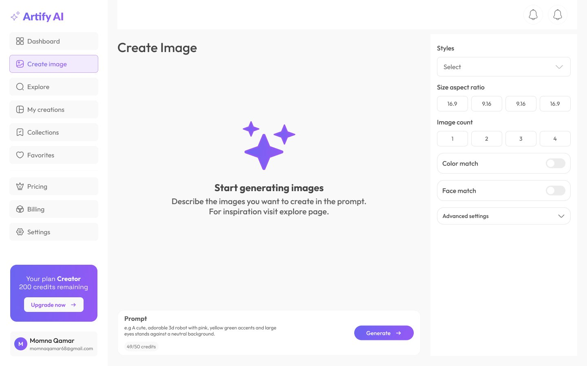
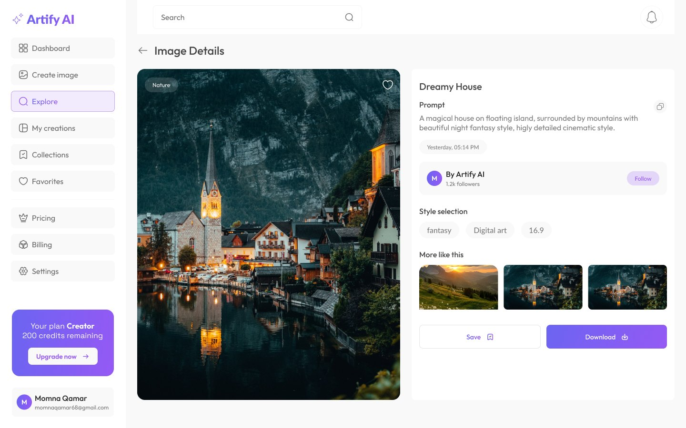
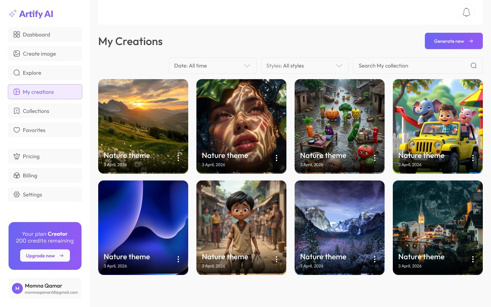
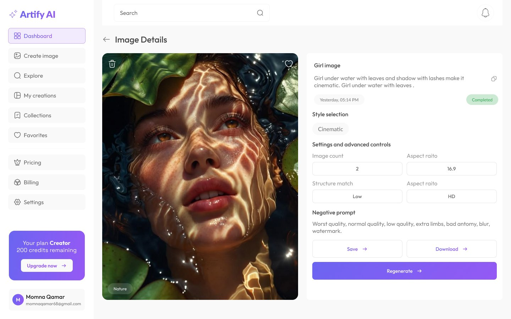
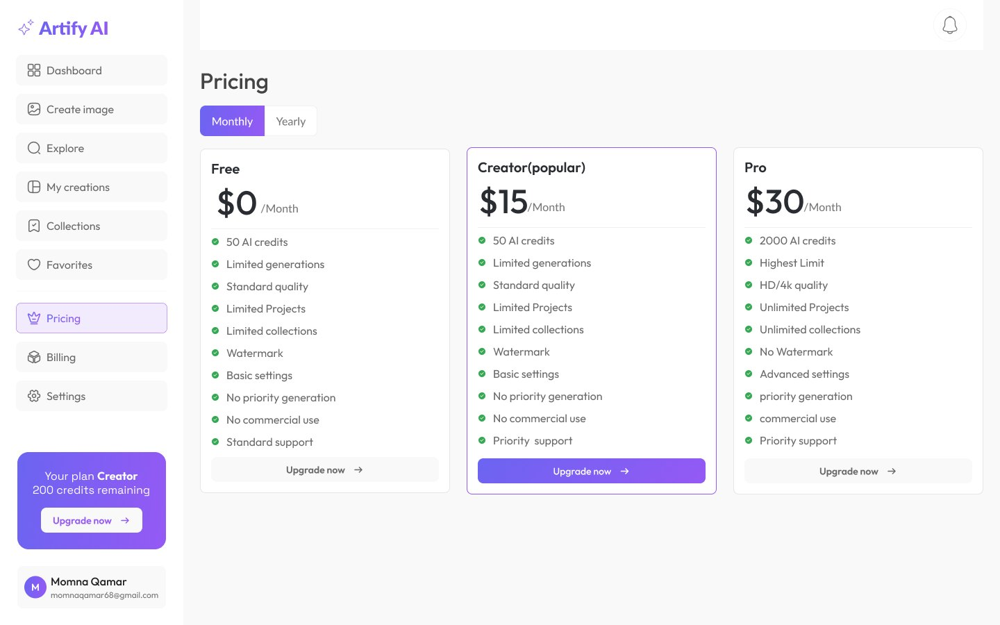

01
Overview
Artify AI is a web application that lets users generate high-quality images from text prompts. I designed it for creators, marketers and designers who need visuals fast, without advanced design skills.
An AI-assisted creative workspace that turns ideas into stunning visuals.
Artify AI is a web application that lets users generate high-quality images from text prompts. I designed it for creators, marketers and designers who need visuals fast, without advanced design skills.
Most AI image tools feel technical and overwhelming. Beginners don't know how to write good prompts, and there's no simple way to organize or refine results.
A clean workspace with simple style presets, a guided create page and a gallery that keeps every image organized, so anyone can create with confidence.
Studied popular AI image tools and where beginners get stuck.
Mapped the path from writing a prompt to saving and sharing an image.
Sketched the dashboard, create page, gallery and image details.
Built a clean, light UI with violet accents so the images stand out.
Linked 30+ screens into an interactive prototype to test the flow.

The dashboard shows favorites and recent creations, with a clear sidebar and a credits panel so users always know their plan.

Users describe what they want, then pick a style, aspect ratio and image count. Advanced settings stay tucked away for beginners.

Each image shows its prompt, style and similar results, with one-click save and download.

A filterable gallery keeps every generated image easy to find by date, style or keyword.
A clean, geometric typeface with a modern, minimal feel that gives Artify AI a confident, futuristic look.
A highly readable typeface designed for screens, so prompts and settings stay clear at every size.
Click a color to copy its hex code.


30+ screens
Do you have a great idea you want to share?
Let's make something amazing together.